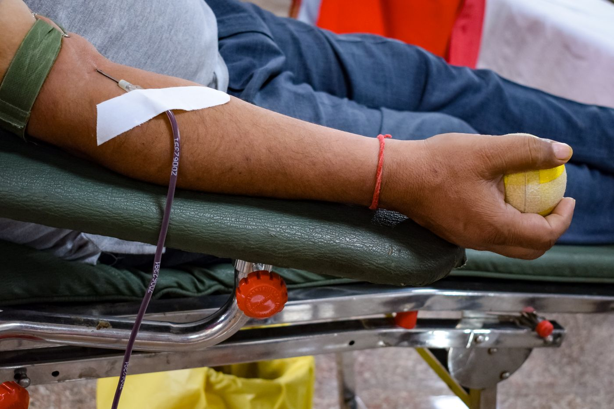
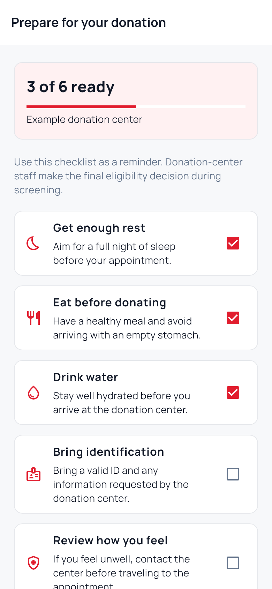
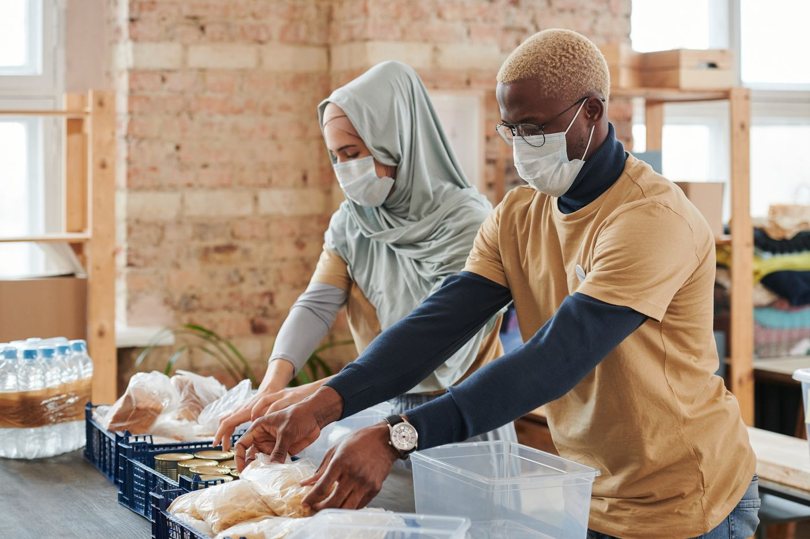
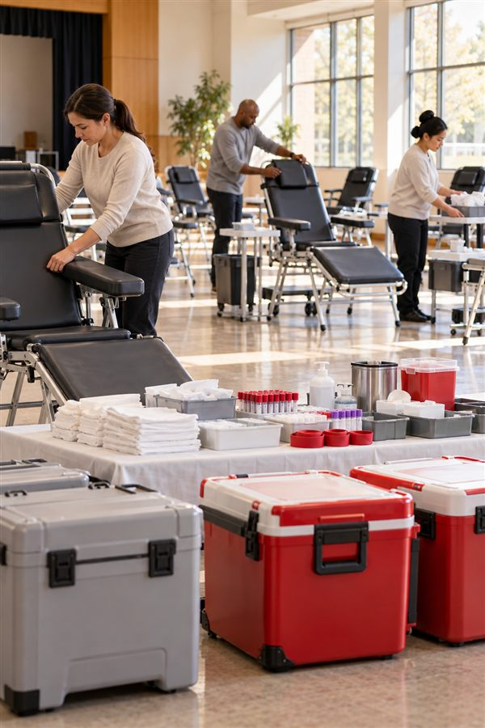
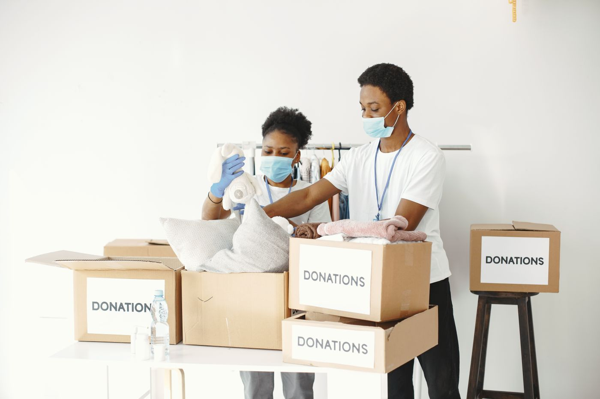

Blood donation
Prepare to donate and follow the chapter's review and screening process.
TOGETHER FOR SAFER, HEALTHIER COMMUNITIES
MyDugo connects donors, approved hospitals, volunteers, and chapter staff to make blood donation and community response easier to coordinate.
Chapter staff review eligibility and blood-test results. The donation center makes the final on-site assessment.

BLOOD DONATION IS A COMMUNITY ACT01 / THE MYDUGO MOBILE APP
Explore three feature previews built from MyDugo Flutter widgets. The screens show demo data, so they do not represent a real donor, hospital inventory, or volunteer record.

FOR DONORS
Complete the eligibility questionnaire, follow the chapter review, and use the donation preparation checklist when your visit is arranged.
FOR PARTNER HOSPITALS
Authorized hospital staff can check general availability, submit requests, and follow the chapter's review and response.
FOR VOLUNTEERS
Approved volunteers can explore opportunities, check their schedule, and review recorded service after chapter assignments.
Previews captured from real Flutter interface widgets with demo data. Hospital and volunteer screens combine existing widgets in a demo layout. No account, patient, or live inventory information is shown.

02 / ABOUT HUMANITARIAN SERVICE
People, partnerships, and preparedness help communities respond when it matters.
The Philippine Red Cross protects life and dignity through blood services, disaster management, safety, health, social services, and youth and volunteer service. Its work is guided by humanity, impartiality, neutrality, independence, voluntary service, unity, and universality.
MyDugo helps the Albay–Legaspi City Chapter organize blood donation, hospital requests, and volunteer coordination in one app.
03 / WHAT MYDUGO CONNECTS
One shared workflow helps the chapter coordinate people and information. Care and clinical decisions remain with trained staff.
Prepare to donate and follow the chapter's review and screening process.
Approved hospitals submit requests for chapter review and coordination.
Request a blood-test visit when needed, then a donation appointment when cleared.
Approved volunteers follow published opportunities and assigned activities.
Suitable donors can see relevant approved blood needs through in-app updates.
Partner hospitals follow request status and communicate with chapter staff.
04 / REAL-WORLD IMPACT
Every reviewed donor, coordinated request, and volunteer assignment is part of a larger effort to make care more timely and organized. We will share chapter-approved impact figures here when they are available.
05 / THE DONOR JOURNEY
MyDugo organizes the steps. Chapter review and the donation center's on-site screening determine whether a donation can go ahead.
Start a donor profile in the Android app.
Answer the questionnaire honestly and submit it for review.
Staff review your information and confirm the next step.
Follow the chapter's instructions. Staff verify the result.
When cleared, request an appointment and complete screening on site.
The questionnaire is a preparation step, not medical clearance.
06 / WHY IT MATTERS
Safe blood supports care in many settings. Voluntary donation helps blood services prepare for changing needs.
World Health Organization overviewSerious accidents and trauma may require transfusions.
Some procedures depend on timely access to compatible blood.
People living with certain conditions can need repeated transfusions.
Blood can be essential when pregnancy or childbirth has serious complications.
Maintaining a safe supply helps services respond when needs arise.

AI-generated editorial images illustrate these topics; they do not show actual patients, chapter facilities, or chapter activities.
07 / PEOPLE WE SERVE
Prepare for donation, follow chapter review, see relevant approved requests, manage visits, and view your recorded history.
Explore the journey →Approved accounts submit blood requests and track chapter review and request progress.
Blood assistance →Approved volunteers find published opportunities, receive assignments, and review reported service.
Volunteer with us →Learn about blood donation, humanitarian service, and where to ask the chapter for help.
Learn more →08 / BLOOD ASSISTANCE
Authorized hospital accounts coordinate blood requests through MyDugo. Chapter staff review requests before donor outreach. If you need help, contact your hospital or the chapter directly.
For an immediate medical emergency, contact a hospital or your local emergency services. This website does not dispatch emergency care.

09 / GIVE YOUR TIME
Volunteers help humanitarian work happen. Approved MyDugo volunteers can follow published chapter opportunities and their assignments in the app.
Ask the chapter how to join or learn about Philippine Red Cross volunteer service.
10 / STAY CONNECTED
MyDugo keeps donation steps, chapter decisions, relevant blood needs, and service opportunities within reach.
Download the signed APK from the MyDugo GitHub release. This is a preview build distributed directly, outside Google Play.
Version 1.1.0 (build 4) · Released October 5, 2026 · 58.06 MiB (60,882,354 bytes)
Download Android APKSHA-256: 2128415b74f6939ffddc08eb979ccde4a29958078dc61a461694553b56d23ec1
11 / GOOD TO KNOW
For personal medical advice or urgent care, speak with a qualified healthcare professional or the chapter.
Donation depends on a health assessment and blood-service requirements. Complete the app questionnaire for chapter review, then follow the donation center's on-site screening. See Philippine Red Cross blood-service guidance.
No. Chapter staff review your answers and any required blood-test result. The donation center makes the final on-site decision.
After the required chapter approvals, request an available donation appointment in MyDugo. You may need a blood-test visit first.
Review your appointment in the app and use its available update options, or contact the chapter if you need help. Availability and chapter confirmation still apply.
Donations recorded to your account appear in your history after staff process them. Ask the donation center for personal post-donation guidance.
Contact the chapter about joining. Approved volunteers can follow published opportunities and assignments in MyDugo.
Approved partner hospital accounts submit requests in the app for chapter review. Patients and families should contact their treating hospital or the chapter directly.
Relevant approved blood needs and chapter updates can appear in the app. Device notification delivery depends on device settings and app configuration; never rely on the app alone in an emergency.
Use the signed Android preview APK in the download section. It is a direct GitHub download, not a Google Play listing. No iOS release is confirmed.
12 / GET IN TOUCH
For blood donation questions, hospital assistance, or volunteering, contact the Philippine Red Cross Albay–Legaspi City Chapter. Confirm current services before visiting.
Contact the chapter for current visiting hours.
0977 146 6761 Check the official chapter listing ↗